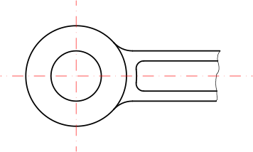

<p>Met dit functie kunt u lijnen uit de vrije hand tekenen. Dit functie wordt
meestal spaarzaam gebruikt, omdat technische tekeningen absolute nauwkeurigheid
vereisen. In sommige gevallen kan dit functie echter van pas komen,
bijvoorbeeld bij gebroken randen zoals hier getoond:
<br />
</p>
